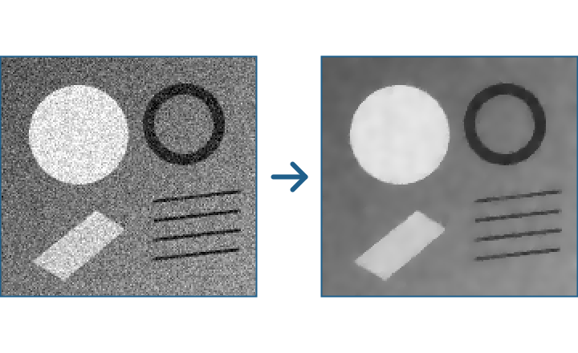

Image filters in double, plane by plane
Function overview for the presentation of the envisionz framework, as of 28 Sep 2026. Image filters as pure computing building blocks, without UI
and without ties to an application: edge-preserving denoising, removal of impulse noise, specks and periodic patterns, morphology,
decomposition into a smooth and a textured part, orientation field and the smoothing of a camera path.
For each method: purpose, API, use in the framework, applications, examples. The examples are shortened.
The API names are German (e.g. Ebenenfilter = plane filter, anwenden = apply, Sprenkel = speckle, Glaettung = smoothing); they are shown unchanged.

TotalVariation: noisy test image on the left, result on the right.EbenenfilterPrinciples of the module
BufferedImage. Eight bits per channel meant: a chain of five filters rounds to whole steps five times. In a restoration whose gain lies at a fraction of a step, that is the difference between effect and noise.double[], row by row) is filtered, so the chroma subsampling is kept and not converted up and down at every step.art() (kind) distinguishes reconstruction (extracts existing information), estimation (fills with justified assumptions) and measurement (only examines).anwenden returns a new plane; filters can be chained freely.The common interface envisionz.image
Ebenenfilter – a filter on one image plane
Three methods: apply, name for display and log, kind. Implemented by Bilateral, PeronaMalik, TotalVariation, Median, Sprenkel, Kerbfilter, Hutfilter and CartoonTextur.
Methods
anwenden(double[] plane, int width, int height)→double[]name(),art()→Art.REKONSTRUKTION | SCHAETZUNG | MESSUNG(default: estimation)
Used in
What for
Build filter chains for restoring video and image material whose steps name themselves in the log.
Example – a chain on the luma plane
Ebenenfilter[] kette = { new Median(1, true), new Sprenkel(), new Bilateral(3, 3.0, 12.0) };
double[] y = helligkeit; // row by row, width * height
for (Ebenenfilter f : kette) {
y = f.anwenden(y, breite, hoehe);
System.out.println(f.name() + " – " + f.art());
}Edge-preserving denoising envisionz.image
Bilateral, PeronaMalik, TotalVariation – three strengths
Bilateral weights by distance and by brightness difference: the gentlest, most likely to keep fine structure (faces, lettering). PeronaMalik: anisotropic diffusion, heat conduction inhibited at edges; controllable step by step, with many steps a "painted" look. TotalVariation: Rudin-Osher-Fatemi, solved after Chambolle; piecewise smooth with sharp edges, the most effective under strong noise. Bilateral and Perona-Malik – background, formulas and pseudocode → Total variation – background, formulas and pseudocode →
Methods
new Bilateral()=(3, 3.0, 12.0);new Bilateral(radius, sigmaSpace, sigmaValue)new PeronaMalik()=(10, 12.0, 0.20);new PeronaMalik(steps, threshold, lambda)new TotalVariation()=(12.0, 30, 0.125);new TotalVariation(weight, steps, tau)
Used in
What for
Tape noise in old video recordings, noise in scanned charts before digitising.
Example – strong, but with few steps
double[] glatt = new PeronaMalik(5, 8.0, 0.20).anwenden(y, breite, hoehe);
double[] plakativ = new TotalVariation(20.0, 30, 0.125).anwenden(y, breite, hoehe);Removing defects envisionz.image
Median, Sprenkel, Kerbfilter – impulses, specks, patterns
Median throws outliers out, however extreme, optionally horizontally only; fine lines narrower than half the radius disappear too. Sprenkel (speckle) does not ask about the neighbourhood but about the size of the blob a pixel belongs to: small, bounded specks (limited area and extent) are replaced from their surroundings. Kerbfilter (notch filter) sets narrow peaks in the spectrum away from the centre to zero, together with the mirrored position; it tests against the local neighbourhood in the spectrum, not against the global median. It counts as reconstruction. Median and speckle – background, formulas and pseudocode → Notch filter – background, formulas and pseudocode →
Methods
new Median()=(1, false);new Median(radius, horizontalOnly)new Sprenkel()=(30.0, 40, 12);new Sprenkel(deviation, maxArea, maxExtent),gefundeneStoerungen()(defects found)new Kerbfilter()=(8, 3, 6.0, 24);new Kerbfilter(centreRadius, notchRadius, threshold, maxCount),gekerbteSpitzen()(peaks notched)
Used in
What for
Tape dropouts, dust and scratches, colour crosstalk in VHS, moiré and show-through screens.
Example – remove a periodic pattern and see how much was notched
Kerbfilter k = new Kerbfilter();
double[] sauber = k.anwenden(y, breite, hoehe); // FFT from framework-math, padded to 2^n
int spitzen = k.gekerbteSpitzen();Morphology envisionz.image
Morphologie and Hutfilter – finding strokes by their direction
Erosion and dilation (minimum and maximum under a structuring element), from them opening (removes everything narrower than the element) and top-hat (image minus opening: exactly what was removed remains). A vertical element brings out horizontal strokes – tape dropouts, head-switching noise, line defects. Hutfilter (top-hat filter) wraps this as an Ebenenfilter: as top-hat a measurement, as opening an estimation. Background, formulas and pseudocode →
Methods
Morphologie.waagerecht(half)(horizontal),senkrecht(half)(vertical),quadrat(radius)(square) → structuring elementverkleinern(erode),vergroessern(dilate),oeffnen(open),hut(top-hat) – each(plane, w, h, element)new Hutfilter(size, Form.SENKRECHT | WAAGERECHT | QUADRAT[, opening])
Used in
What for
Detect tape dropouts more precisely than with a brightness threshold; separate grid lines in charts from their content.
Example – make horizontal strokes visible
double[] striche = Morphologie.hut(y, breite, hoehe, Morphologie.senkrecht(2));
double[] ohne = new Hutfilter(5, Hutfilter.Form.SENKRECHT, true).anwenden(y, breite, hoehe);Texture and direction envisionz.image
CartoonTextur and Orientierungsfeld
CartoonTextur (cartoon-texture) splits an image into a smooth part (shapes and edges) and a textured one (fine detail and noise), by comparing the local total variation before and after a smoothing; both together give the original image again. The textured part can then be denoised strongly and the smooth part sharpened. Orientierungsfeld (orientation field) determines, via the averaged structure tensor, the direction of a structure at each pixel and how unambiguous it is. Cartoon-texture – background, formulas and pseudocode → Orientation field – background, formulas and pseudocode →
Methods
new CartoonTextur(Teil.GLATT | STRUKTUR),new CartoonTextur(sigma, lower, upper, part)new Orientierungsfeld(plane, w, h, smoothing),richtungX(i),richtungY(i),winkel(i)[degrees],guete(i)(quality)
Used in
What for
Treat edges and noise separately; edge-directed interpolation when deinterlacing, so diagonals do not become jagged.
Example
double[] fein = new CartoonTextur(CartoonTextur.Teil.STRUKTUR).anwenden(y, breite, hoehe);
Orientierungsfeld o = new Orientierungsfeld(y, breite, hoehe, 2);
double richtung = o.winkel(z * breite + x), sicher = o.guete(z * breite + x);Image stabilisation envisionz.image
Glaettung – a smooth path through the frame-to-frame shifts
Locally weighted regression of second degree with Gaussian weights: a parabola through the neighbourhood around each point. The smooth path is the intended camera motion, the difference the shake. A straight line is not enough, because a camera motion accelerates and decelerates; a natural spline overshot at the ends and was worse than the raw values. Background, formulas and pseudocode →
Methods
Glaettung.glaetten(double[] values, int window)→double[]
Used in
What for
Steady shaky video recordings without losing pans and zooms.
Example
double[] bahn = Glaettung.glaetten(summierteVerschiebungX, 15);
for (int i = 0; i < bahn.length; i++) korrekturX[i] = bahn[i] - summierteVerschiebungX[i];Spline and also carried a natural cubic spline; that now exists only once, as envisionz.math.kurven.CubicSpline in framework-math.Usage matrix in the framework
Which modules use which parts today, counted in the source code (excluding probes).
| Module | Denoising | Defects | Morphology | Texture, direction | Smoothing | What for |
|---|---|---|---|---|---|---|
| – | No module includes framework-image in its .classpath today. |
BufferedImage (such as OrientationField, DespeckleFilter), from which these filters were rewritten. Obvious users are the restoration in framework-restore and app-forensik as well as the digitiser.